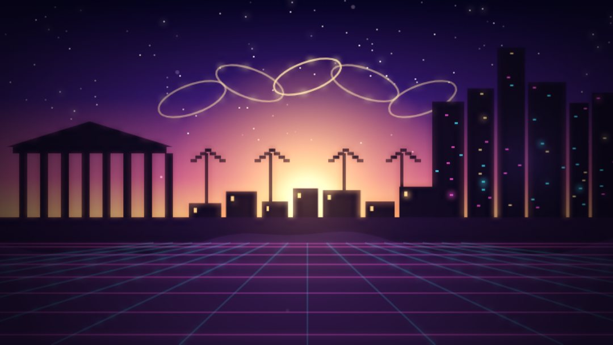
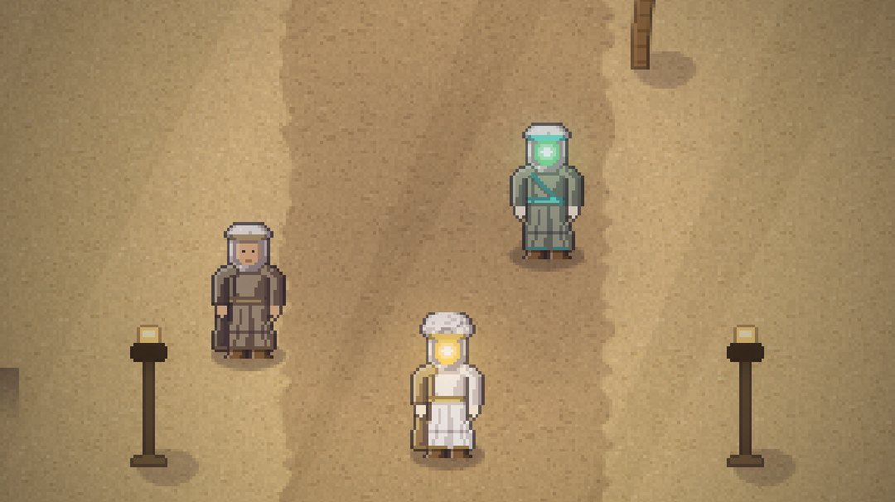
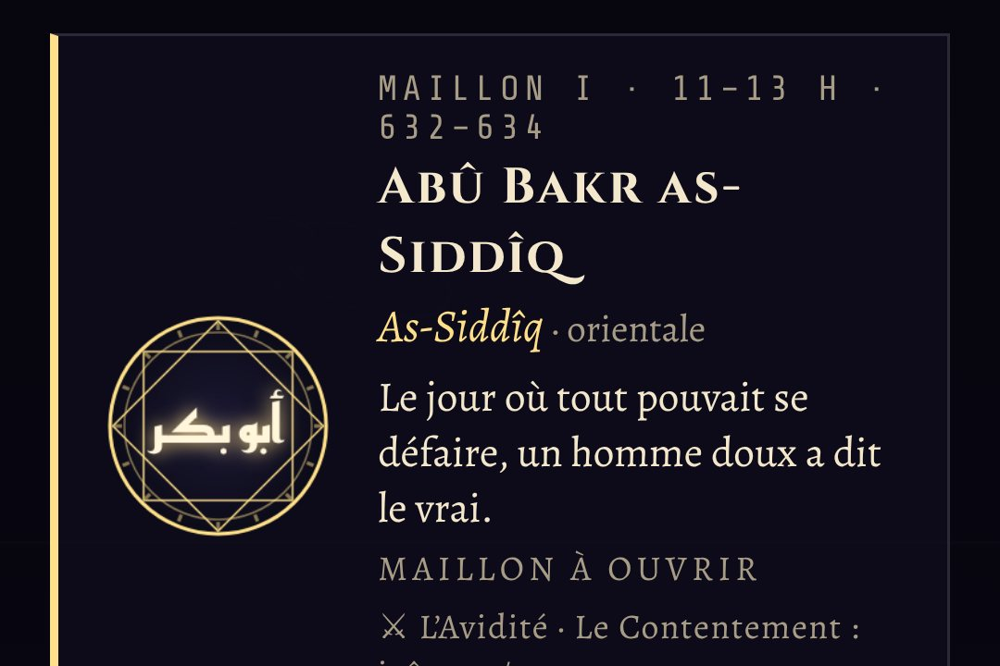
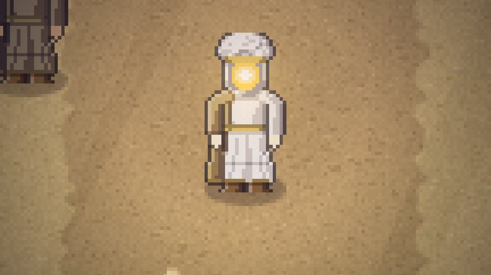
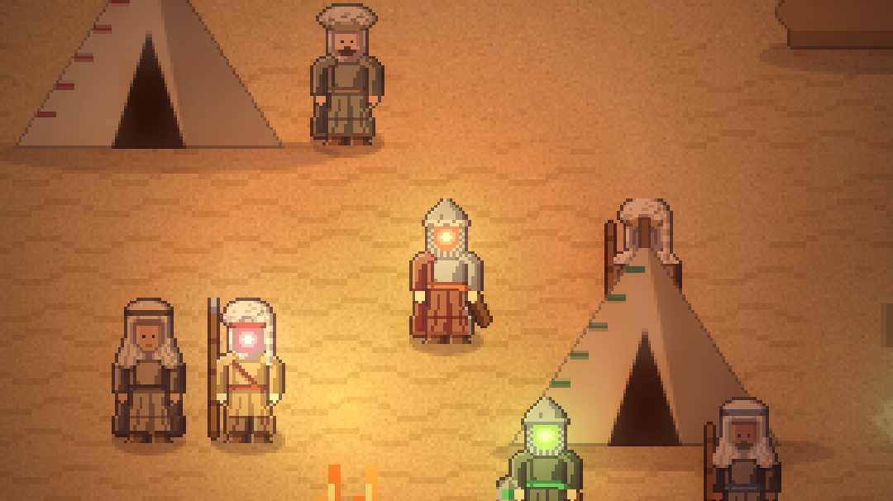
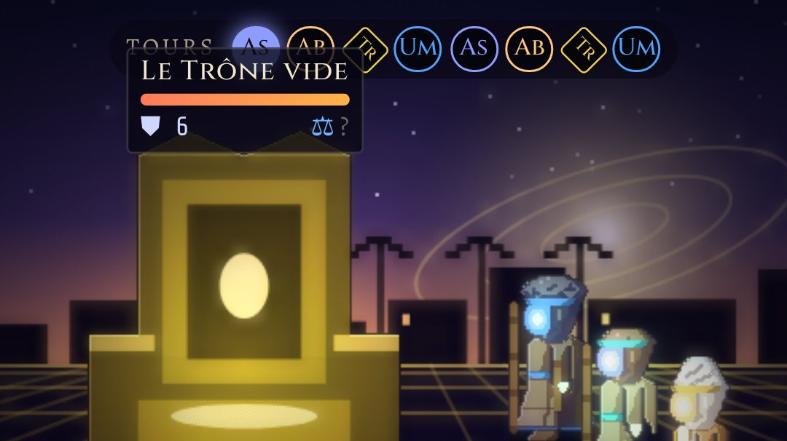
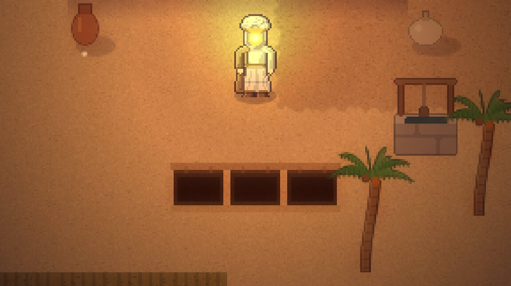

إسناد
{{NOM}}
{{SOUS_TITRE}}
« {{DEVISE}} »
Un jeu de rôle sur les Compagnons,
après la mort du Prophète ﷺ
Présentation{{ETAT}}

Le jeu, en une page
Un jeu de rôle au tour par tour, en pixel art éclairé. Cinq sagas, de la mort du Prophète ﷺ à la fin du califat bien guidé. Dans le navigateur, sans installation.
On y traverse Médine, le désert, la mer, Koufa. On y parle avant de combattre. On y creuse une tranchée, on y bâtit un puits. Et l’on y affronte des idoles — jamais des personnes.
Le sujet est religieux et historique : l’exactitude et le respect y passent avant toute considération de jeu.
{{NOM}}2 / 12

L’isnâd : la chaîne
Isnâd : la chaîne de ceux qui transmettent.
« Untel m’a rapporté, d’après untel, qui l’a vu. » Des hommes ont passé leur vie à vérifier chaque maillon. C’est ainsi qu’une parole traverse quatorze siècles sans se dissoudre.Maître Yûnus — personnage du jeu
Le jeu en fait son fil. En 2084, un archiviste — un râwî, un transmetteur — remonte la Chaîne : cinq maillons, cinq témoins.
{{NOM}}3 / 12

Ce que le jeu s’interdit
- Le Prophète ﷺ n’est jamais représenté, ni mis en scène. On l’évoque ; on le cite, avec la source.
- Aucun Compagnon n’a de visage : un voile de lumière en tient lieu.
- Aucun ennemi n’est une personne, un peuple ni une religion : seulement des égrégores, les idoles que les cœurs fabriquent ensemble.
- Ni voix, ni récitation, ni appel à la prière dans le son du jeu.
- Aucun groupe n’est un ennemi par nature. Chez chacun, des gens d’honneur.
{{NOM}}4 / 12

Cinq sagas, cinq Lumières
Chaque saga suit un Compagnon et porte une Lumière.
{{SAGA:abubakr}} {{SAGA:umar}} {{SAGA:khalid}}{{NOM}}5 / 12
 {{SAGA:uthman}}
{{SAGA:ali}}
{{SAGA:uthman}}
{{SAGA:ali}}
Autour de ces vies, deux récits de fiction, dits comme tels : en 2084, Idris, l’archiviste ; au bord du désert, un Caïd qui lit ces vies à la veillée pour apprendre à tenir sa citadelle.
Les dissensions entre Compagnons sont évoquées avec retenue, sans désigner de coupable.
{{NOM}}6 / 12

Comment on y joue
- La parole avant le sabre. Un pourparler se gagne par des réponses vraies ; menacer ou flatter fait perdre la confiance.
- Le combat, au tour par tour, contre des égrégores. « On ne détruit pas une idole en la haïssant. On la dévoile : on montre qu’elle est vide. »
- Bâtir, s’orienter, commercer : un puits, des palmiers, une tranchée ; la nuit, le cadran des étoiles.
- La noosphère : un labyrinthe tiré au hasard, où rôdent de petits égrégores.
{{NOM}}7 / 12

Les paroles et leurs sources
Une parole attestée paraît dans un carton, avec sa source : al-Bukhârî, Muslim, Ibn Hishâm, Ibn Sa’d, at-Tabarî… Quand une attribution est discutée, le jeu écrit « On rapporte » et le signale dans son recueil.
Les versets sont donnés en traduction du sens, avec leur référence.
Ce qui varie selon les choix du joueur est fictif ou local : l’issue d’un pourparler ne change jamais un fait de l’histoire.
{{NOM}}8 / 12

Le cœur et les œuvres
Prière, dhikr, étude du Coran, jeûne, aumône, visite, pèlerinage : le jeu les décrit sobrement, sans formule, sans verset ni parole inventés. Il n’en fait pas des sortilèges. Il en tire une « provision du cœur » ; la prière y repose le groupe.
Maux du cœur, lames, compagnons de lumière : des images de fiction, dites comme telles. Aucun mal du cœur n’est prêté à un Compagnon.
À savoir : dans une bataille presque perdue, le groupe peut être relevé. Le jeu cite alors ce que le Coran rapporte de Badr, en traduction du sens, et ne montre aucun ange.
{{NOM}}9 / 12

Pour les parents, pour ceux qui enseignent
- Ce qu’il peut faire : donner envie d’ouvrir les livres ; faire sentir ce qui sépare une parole sourcée d’une rumeur.
- Ce qu’il ne fait pas : il ne remplace ni un livre, ni un cours, ni un savant.
- Fiction et histoire : le jeu mêle les deux, et dit toujours laquelle il raconte.
- Il tient dans une page : ni compte à créer, ni achat, ni publicité dans le jeu. Tout est en français ; le texte et l’image s’agrandissent.
{{NOM}}10 / 12

Pourquoi 2084 ?
Dans la Cité-Miroir, on ne lève plus les yeux. Le ciel est un écran, et l’écran regarde en retour.
Autrefois on demandait : « Qui te l’a dit ? » Maintenant on demande : « Combien l’ont vu ? »Deux phrases du jeu
La fiction de 2084 pose la question du jeu : que vaut une parole dont on ne sait plus de qui on la tient ?
Les idoles changent de nom. La chaîne, elle, ne rompt pas.
{{NOM}}11 / 12

Où en est le projet
{{RESERVE}}
Une erreur — une date, une attribution, une formulation ? Signalez-la : le jeu se corrige. Et vérifiez toujours auprès des sources et de ceux qui savent.
Où jouer
{{ADRESSE}}
Dans le navigateur, sur téléphone ou sur ordinateur. Sans installation.
{{NOM}}12 / 12